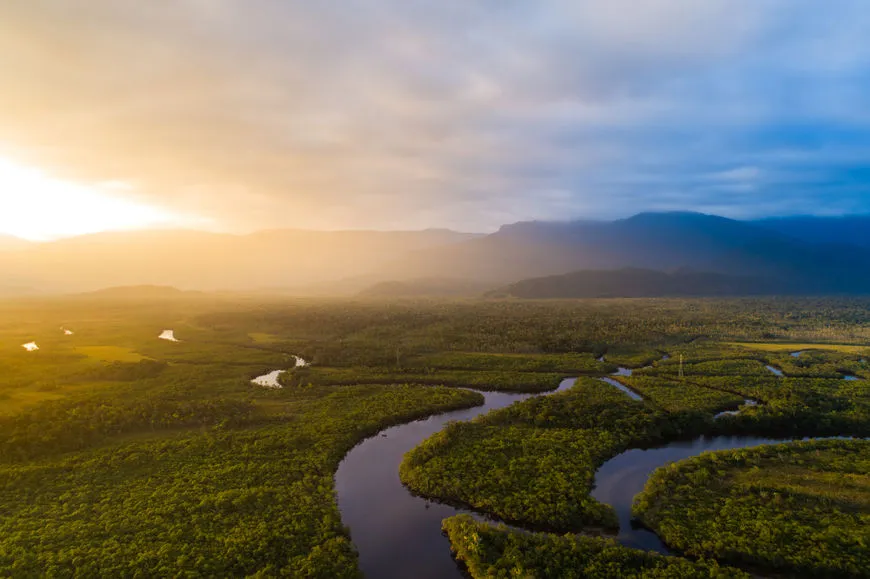

A floresta provavelmente se formou durante o período Eoceno. Ela apareceu na sequência de uma redução global das temperaturas tropicais do Oceano Atlântico, quando ele tinha se alargado o suficiente para proporcionar um clima quente e úmido para a bacia amazônica.
